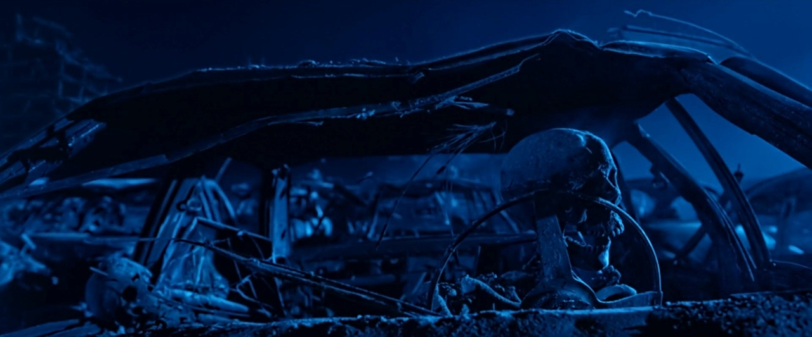
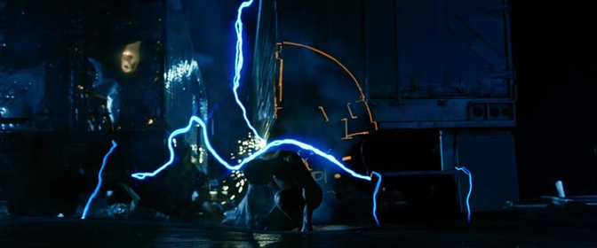
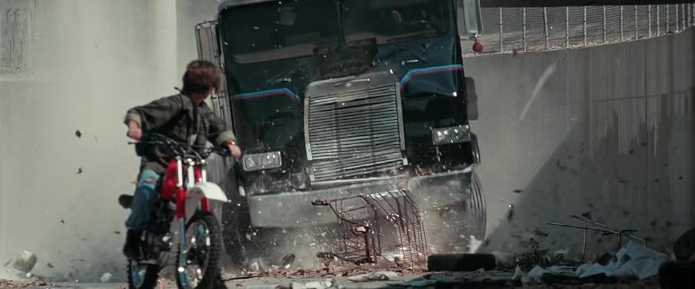
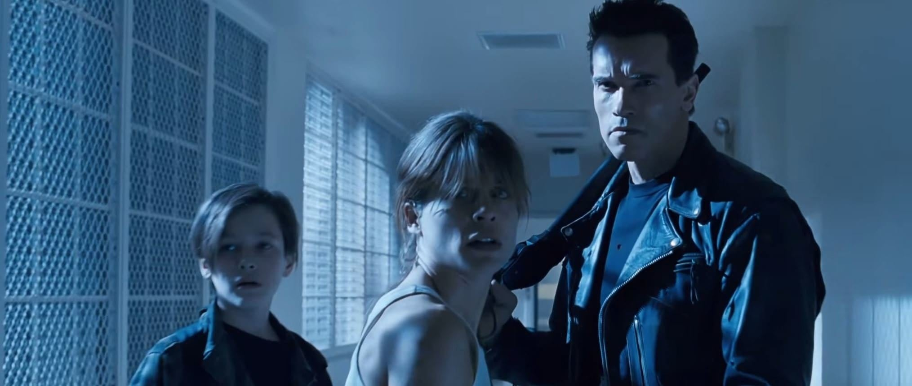
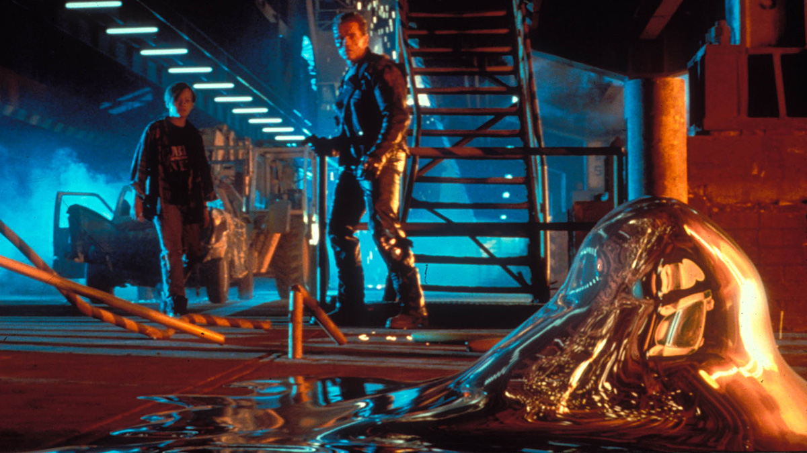
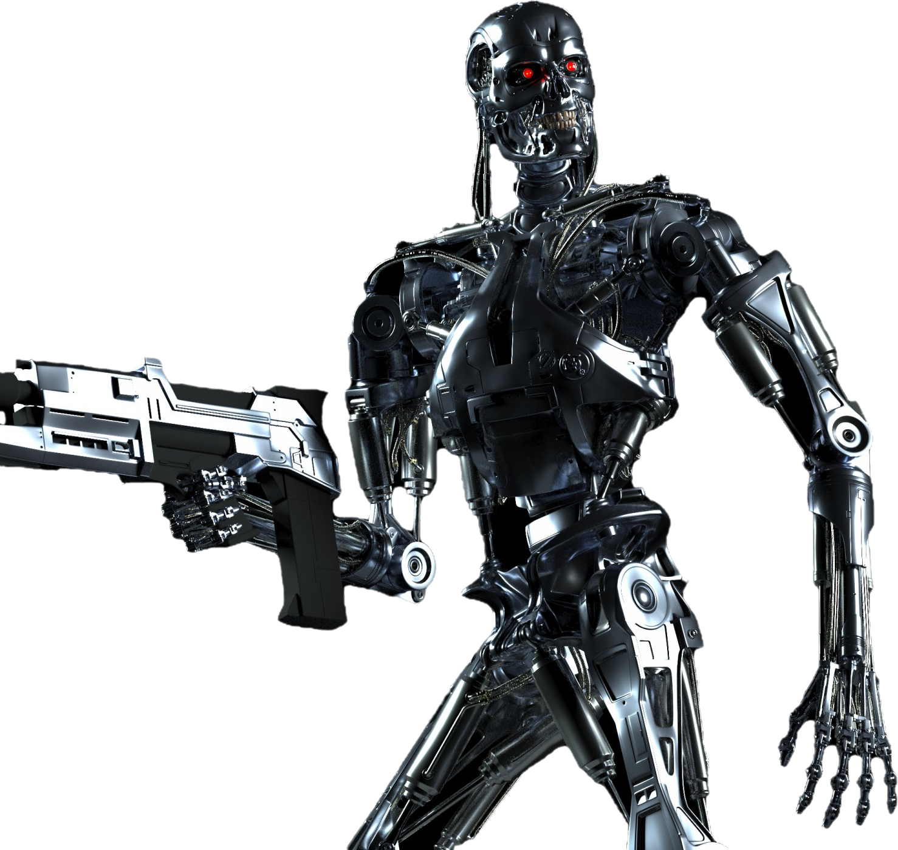

Terminator 2: Judgment Day
Сюжет

В 1995 году Джон Коннор живёт в Лос-Анджелесе с приёмными родителями. Его мать Сара Коннор с детства готовила его к будущей роли лидера Сопротивления человечества против Скайнета, искусственного интеллекта, который получит контроль над ядерным потенциалом Соединенных Штатов и начнет ядерную войну 29 августа 1997 года. Этот день будет известен впоследствии как «Судный день». Однако Сара была арестована и заключена в психиатрическую больницу за попытку взорвать компьютерную фабрику. Мир её сына рухнул: Джон дерзит своим опекунам, убегает из дома и прогуливает школу.

В 2029 году Скайнет отправляет нового Терминатора T-1000 в прошлое, чтобы убить Джона. T-1000 — это более совершенная модель, изготовленная из жидкого металла («мимикрирующий полисплав»), который дает ему возможность принимать форму и внешний вид практически всего, к чему он прикасается, мгновенно заращивать раны и превращать руки в оружие. T-1000 прибывает в 1995 год, убивает патрульного полиции, завладевает его оружием и принимает облик полицейского; он также использует полицейский компьютер, чтобы выследить Джона. В 1995 году никто не сможет справиться с боевым роботом такого уровня, но Джон Коннор из будущего послал перепрограммированного терминатора Модели 101, чтобы защитить себя в юности.

Пути Т-800 и Т-1000 пересекаются в поисках Джона в торговом центре. Рукопашная схватка роботов идёт с преимуществом Т-1000, но Т-800 с помощью мощного огнестрельного оружия временно шокирует Т-1000, после чего начинается погоня, и Джон с Т-800 вместе скрываются на мотоцикле. Опасаясь, что Т-1000 убьет Сару, чтобы добраться до него самого, Джон приказывает Терминатору помочь освободить её, обнаружив, что Терминатор должен выполнять его приказы.

Сара, узнав от врачей о появлении в городе человека, похожего на Терминатора, планирует побег из больницы. Т-1000 тоже появляется в психиатрической клинике, где лежит Сара, убивает охранника и принимает его облик. Тем временам Сара пытается бежать из клиники, но на пути к побегу встречает Т-800 и Джона, которые перехватывают её, после чего рассказывают правду об истории Скайнета. Т-1000 преследует их, но безуспешно, однако это убеждает Сару в необходимости довериться Т-800. Сара, несмотря на свой страх перед роботом, доверяет сыну, и следует за ним. Позже она узнает, что человеком, непосредственно ответственным за создание Скайнета, является Майлз Дайсон, инженер «Кибердайн системс», работающий над революционно новым микропроцессором. Именно этот процессор станет потом основой для Скайнета.
Сара, найдя приют у своего давнего друга, берёт у него оружие, чтобы убить Дайсона и не допустить наступления Судного дня. Джон приказывает роботу остановить её. Сара ранит инженера, но оказывается не в состоянии убить невинного человека на глазах его семьи. Появившиеся Джон и Т-800 и рассказывают Дайсону о будущих последствиях его работы. Они узнают, что большая часть его исследований является результатом обратной разработки повреждённого центрального процессора и правой руки предыдущего Терминатора, который пытался убить Сару в 1984 году. Убедив Дайсона, что проект должен быть остановлен, они врываются в здание Кибердайн, забирают процессор и манипулятор уничтоженного терминатора и устанавливают взрывчатку, чтобы разрушить лабораторию Дайсона. Прибывшие полицейские открывают стрельбу. Смертельно раненный инженер из последних сил удерживает в руке детонатор, давая друзьям и полицейским время уйти. Мощный взрыв уничтожает лабораторию.Т-1000 неустанно преследует главных героев, в конечном итоге загоняя их в угол на металлургическом комбинате.

T-1000 и Т-800 опять сражаются, и более продвинутая модель серьёзно повреждает и отключает Модель 101. Однако Терминатор вновь включается, используя резервный источник питания, застаёт противника врасплох и выстрелом гранатомёта отправляет его в чан расплавленной стали. Т-1000 отчаянно ищет форму, устойчивую при высоких температурах, но, не найдя её, погибает. Джон бросает руку и процессор оригинального Т-800 в чан. Сара выражает облегчение, что испытание закончено, но Терминатор объясняет, что для исключения обратной разработки он сам тоже должен быть уничтожен. Т-800 просит Сару помочь опустить его в чан с расплавленной сталью, поскольку сам он не может «самоуничтожиться». Джон, которому робот заменил отца, умоляет и приказывает Терминатору пересмотреть своё решение. Однако робот, имея в виду выживание человечества, отказывается подчиняться. Он прощается с людьми, обнимает плачущего Джона, а затем опускается в чан, поднимая вверх большой палец правой руки. Джон и Сара едут по шоссе, и голос Сары говорит за кадром: «Неизвестное будущее приближается. Я впервые иду навстречу ему с чувством надежды. Если машина, Терминатор, может понять ценность человеческой жизни, возможно, мы тоже сможем».
Терминаторы
Выберите модель для получения информации
Тип
- Инфильтрационный киборг
Назначение
- Устранение целей
- Защита приоритетных объектов
- Проникновение в человеческую среду
Конструкция
-
- Эндоскелет
- титан-танталовый сплав
-
- Покрытие
- живая органическая ткань
-
- Зрение
- инфракрасное + тактический HUD
-
- Источник питания
- компактный ядерный элемент
-
- Система обучения
- ограниченная (в фильме — разблокирована)
Физические характеристики
-
- Сила
- значительно превосходит человека
-
- Выносливость
- не ощущает боли
-
- Реакция
- машинная, мгновенная
-
- Регенерация
- ремонт эндоскелета возможен до критических повреждений
Вооружение
- Использует любое доступное оружие
- Способен применять транспорт и тяжёлую технику
-
- Предпочтение
- огнестрельное оружие крупного калибра
Поведенческие особенности
- Холодная логика
- Отсутствие эмоций (изначально)
- Способен обучаться и перенимать человеческие модели поведения
- Строгое следование приказам приоритетной цели
Статус в фильме
- Перепрограммирован для защиты Джона Коннора
- Проявляет зачатки понимания человеческой ценности жизни

О фильме
Основные данные
-
Имя файла: Терминатор 2: судный день
-
Год Выпуска: 1991
-
Режиссер: Джеймс Кэмерон
-
Жанр: Научная фантастика / Боевик
-
Продолжительность: 137 минут
-
Производство: Carolco Pictures
Финансы и влияние
-
Производственный бюджет: 102 млн долларов США
-
Кассовые сборы(мировые): 520 млн долларов США
-
Финансовый статус: Коммерчески успешен
Награды и признание
-
Премия "оскар" (1992):
- Лучшие визуальные эффекты
- Лучший грим
- Лучший звук
- Лучший монтаж звуковых эффектов
-
Номинации: отсутствуют (редкий случай: все номинации → победы)
-
BAFTA: Лучшие визуальные эффекты
-
Saturn Awards:
- Лучший научно-фантастический фильм
- Лучший режиссёр (Джеймс Кэмерон)
- Лучший актёр второго плана (Роберт Патрик)
- Лучшие спецэффекты
Статус в киноиндустрии
-
Технологическое влияние: Революция CGI и цифровых эффектов
-
Культовый статус: Признан классикой научной фантастики
-
Наследие: Определил визуальный стандарт экшен-фильмов 1990-х
Саундтреки
Музыка Terminator 2 стала частью визуального языка фильма. Индустриальные ритмы и холодные синтезаторы усиливают ощущение неизбежности.
-
Track_01 - Main Theme
- Композитор
- Brad Fiedel
- Год
- 1991
- Жанр
- Industrial / Synth
- Контекст
- Вступительные титры
0 : 00СИСТЕМНОЕ ПРИМЕЧАНИЕ Оснавная тема фильма. Металлический ритм стал символом всей франшизы -
Track_02 - Guitars & Cadillacs
- Композитор
- Brad Fiedel
- Год
- 1991
- Жанр
- Rock / Score
- Контекст
- Сцена проишествия в баре
0 : 00СИСТЕМНОЕ ПРИМЕЧАНИЕ Редкий для фильма гитарный трек, добавляющий ощущения движиения и свободы -
Track_03 - Bad to the bone
- Aртист
- George Thorogood & The Destroyers
- Год
- 1982
- Жанр
- Blues Rock
- Контекст
- Сцена Т-800 выходит из бара
0 : 00СИСТЕМНОЕ ПРИМЕЧАНИЕ Ироничный контраст: харизма терминатора под классический рок-хит -
Track_04 - You Could Be Mine
- Aртист
- Guns N' Roses
- Год
- 1991
- Жанр
- Hard Rock
- Контекст
- Сцена погони
0 : 00СИСТЕМНОЕ ПРИМЕЧАНИЕ Энергичный трек, усиливающий хаос и темп сцен погони -
Track_05 - Sarah Connor's Dream
- Композитор
- Brad Fiedel
- Год
- 1991
- Жанр
- Ambient / synth
- Контекст
- Сцены снов Сары Коннор
0 : 00СИСТЕМНОЕ ПРИМЕЧАНИЕ Атмосферный трек, отражающий внутренние страхи и напряжения Сары Коннор -
Track_06 - Its over goodbye
- Композитор
- Brad Fiedel
- Год
- 1991
- Жанр
- Ambient / Emotional synth
- Контекст
- Финальная сцена
0 : 00СИСТЕМНОЕ ПРИМЕЧАНИЕ Меланхоличное завершение истории, подчеркивающее жертву Терминатора
Актёры
Съёмочная группа
{kind=link}
{kind=link}
{kind=link}
{kind=link}
{kind=link}
{kind=link}
Режиссёр
- Джеймс Кэмерон
Сценаристы
- Джеймс Кэмерон
- Уильям Уишер мл.
Продюсеры
- Джеймс Кэмерон
- Б.Дж. Рэк
- Марио Кассар
- Стефани Остин
- Гейл Энн Хёрд
- Ван Линг
Оператор
- Адам Гринберг
Композитор
- Брэд Фидель
Звукорежиссёры
- Николас Р. Аллен
- Сандина Бэйло-Лэйп
- Фил Бенсон
- Кристофер Бойс
- Скотт Чандлер
- Крис Баррон
Художники
- Джозеф П. Лаки
- Марлен Стюарт
- Джон М. Двайер
Монтажёры
- Конрад Бафф IV
- Марк Голдблатт
Спецэффекты
- Боб Ахмансон
- Билл Бассо
- Ивэн Брэйнэрд
- Крис Кауэн
- Роб Бурман
- Брент Бэйкер
- Дэвид Бенеке
- Лен Бёрдж
- Крэйг Кэтон
- Ричард Дэвисон
Визуальные эффекты
- Диана Эйс
- Брэт Александр
- Эд Энджелл
- Пол Эндаун
- Рэндолл К. Бин
- Тони Алдерсон
- Скотт Э. Андерсон
- Шон Эпплгейт
- Гордон Бэйкер
- Джеймс Белкин
Заключение
Терминатор 2: Судный день — это не просто культовый боевик или продолжение успешного фильма. Это работа, которая задала новый стандарт для киноиндустрии и показала, каким может быть блокбастер: технологичным, эмоциональным и по-настоящему человечным. Фильм оказал огромное влияние на визуальные эффекты, монтаж, подход к экшену и даже к образу антагониста. Многие решения, которые сегодня кажутся привычными, в начале 90-х были революционными.
Но, пожалуй, главное — это то, что спустя десятилетия картина не теряет актуальности. «Терминатор 2» по-прежнему смотрится современно: и визуально, и по смыслу. Тема ответственности за технологии, выбора и судьбы звучит сегодня не менее остро, чем в момент выхода фильма.
Символично, что интерес к этой истории живёт до сих пор. Даже в наше время появляются новые проекты, вдохновлённые этим миром — включая игру Terminator 2: No Fate, которая доказывает, что легендарная история всё ещё находит отклик у новой аудитории.
«Терминатор 2» — это редкий пример фильма, который не просто выдержал проверку временем, а стал её эталоном.